СТАРТЕР > ПРОВЕРКА |
| 1. INSPECT STARTER ASSEMBLY |
Mount the starter in a vise between aluminum plates.
Perform a pull-in test.
Remove the nut, and then disconnect the lead wire from terminal C.
| 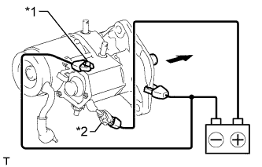 |
Connect the battery to the magnet starter switch as shown in the illustration. Check that the clutch pinion gear extends.
| *1 | Terminal C |
| *2 | Terminal 50 |
Perform a holding test.
| 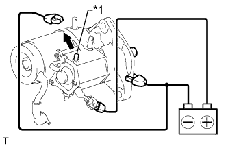 |
Disconnect the negative (-) terminal lead from terminal C with the condition specified in the pull-in test above being maintained. Check that the pinion gear remains extended.
| *1 | Terminal C |
Inspect the clutch pinion gear return.
| 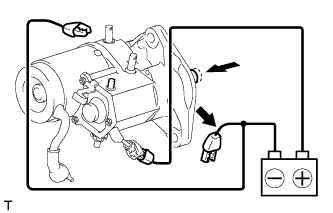 |
Disconnect the negative (-) terminal lead from the starter body. Check that the clutch pinion gear returns inward.
If the clutch pinion gear does not return inward, inspect the magnet starter switch assembly. If the magnet starter switch assembly is not as specified, replace it.
Perform an operation test without load.
Connect the field coil lead wire to terminal C.
| 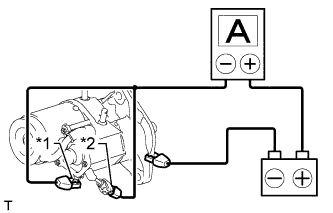 |
Connect the battery and an ammeter to the starter as shown in the illustration.
| *1 | Terminal 30 |
| *2 | Terminal 50 |
Check that the starter rotates smoothly and steadily while the pinion gear is extended. Then measure the current.
| 2. INSPECT MAGNET STARTER SWITCH ASSEMBLY |
Inspect the pull-in coil.
| 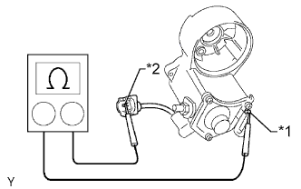 |
Measure the resistance according to the value(s) in the table below.
| Tester Connection | Condition | Specified Condition |
| Terminal C - Terminal 50 | Always | Below 1 Ω |
| *1 | Terminal C |
| *2 | Terminal 50 |
Inspect the holding coil.
| 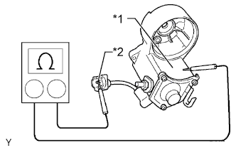 |
Measure the resistance according to the value(s) in the table below.
| Tester Connection | Condition | Specified Condition |
| Switch body - Terminal 50 | Always | Below 2 Ω |
| *1 | Switch Body |
| *2 | Terminal 50 |
| 3. INSPECT BRUSH |
| 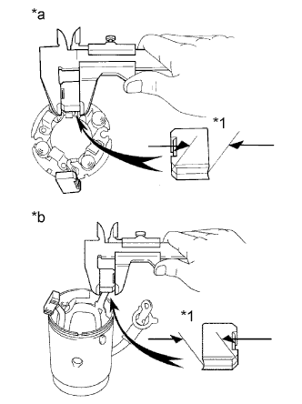 |
Using a vernier caliper, measure the brush length.
| *1 | Length |
| *a | Brush Holder Side |
| *b | Starter Yoke Side |
| 4. INSPECT STARTER BRUSH HOLDER ASSEMBLY |
| 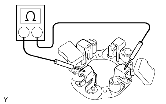 |
Measure the resistance according to the value(s) in the table below.
| Tester Connection | Condition | Specified Condition |
| Positive (+) brush holder - Negative (-) brush holder | Always | 10 kΩ or higher |
Check the brush spring load.
| 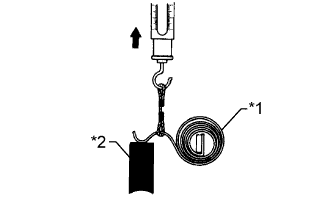 |
Take a pull scale reading immediately after the brush spring separates from the brush.
| *1 | Brush Spring |
| *2 | Brush |
| 5. INSPECT STARTER YOKE ASSEMBLY |
Inspect for an open circuit.
| 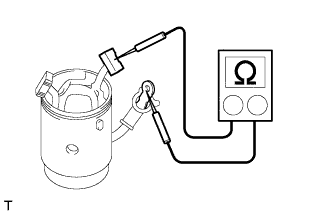 |
Measure the resistance according to the value(s) in the table below.
| Tester Connection | Condition | Specified Condition |
| Lead wire - Brush | Always | Below 1 Ω |
Inspect for a short circuit.
| 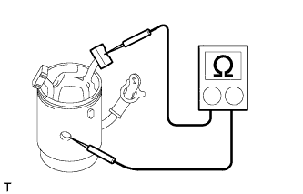 |
Measure the resistance according to the value(s) in the table below.
| Tester Connection | Condition | Specified Condition |
| Starter yoke body - Brush | Always | 10 kΩ or higher |
| 6. INSPECT STARTER ARMATURE ASSEMBLY |
Check the commutator for dirt and/or burns on the surface.
If the surface is dirty or burnt, correct it with sandpaper (No. 400) or a lathe. Replace the armature if necessary.
Inspect the commutator for an open circuit.
| 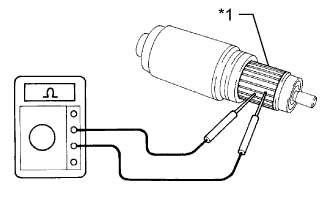 |
Measure the resistance according to the value(s) in the table below.
| Tester Connection | Condition | Specified Condition |
| Segment - Segment | Always | Below 1 Ω |
| *1 | Segment |
Inspect the commutator for a short circuit.
| 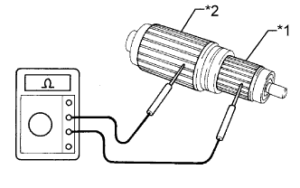 |
Measure the resistance according to the value(s) in the table below.
| Tester Connection | Condition | Specified Condition |
| Segment - Coil core | Always | 10 kΩ or higher |
| *1 | Segment |
| *2 | Coil Core |
Inspect the commutator circle runout.
| 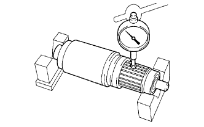 |
Place the armature on V-blocks.
Using a dial indicator, measure the circle runout.
| 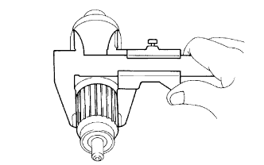 |
Using a vernier caliper, measure the commutator diameter.
| 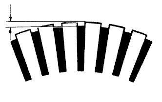 |
Measure the undercut depth of the commutator.
Inspect the bearings.
Check that the bearing rotates smoothly.
If the result is not as specified, replace the starter armature assembly.
| 7. INSPECT STARTER CLUTCH SUB-ASSEMBLY |
| 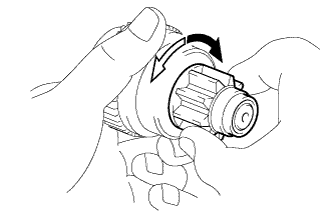 |
Rotate the pinion gear clockwise and check that it turns freely. Try to rotate the pinion gear counterclockwise and check that it locks.
 | Free |
 | Lock |
Turn the pinion gear by hand while applying inward force and check the movement of the bearing.
If resistance is felt or the bearing sticks, replace the starter clutch sub-assembly.